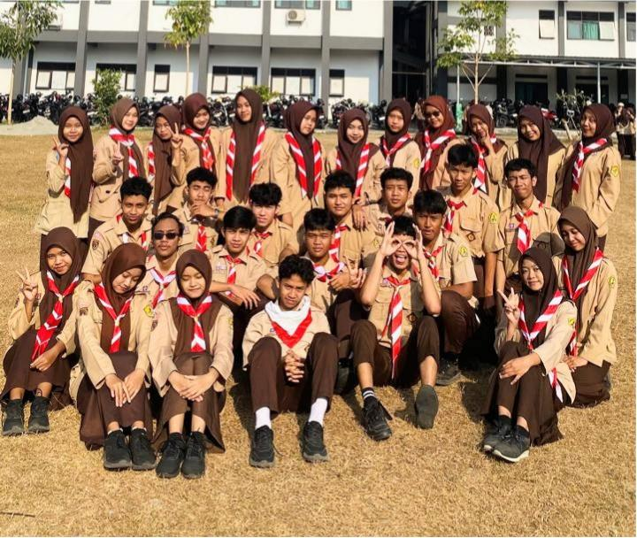
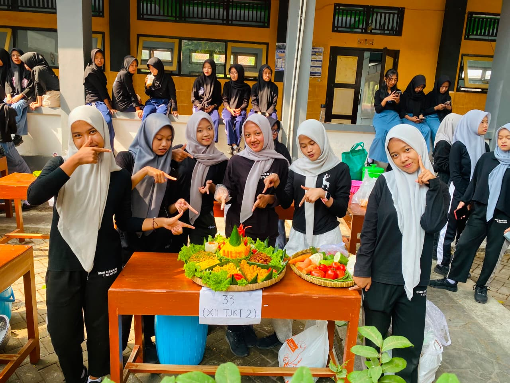

Berbagai kegiatan menjadi bagian dari perjalanan XII TJKT 2 selama berada di sekolah. Mulai dari acara sekolah, peringatan hari besar, hingga kegiatan bersama, setiap momen memberikan pengalaman yang berbeda. Semua kegiatan tersebut menjadi cerita dan kenangan yang kami lalui bersama.

Mengikuti upacara dalam rangka memperingati Hari Pramuka sebagai bentuk penghormatan dan semangat kebersamaan siswa XII TJKT 2.

Memeriahkan HUT SMK dan HUT Republik Indonesia dengan tema Swarnasaka melalui kegiatan lomba menghias tumpeng. Kegiatan ini menjadi momen untuk menunjukkan kreativitas, kekompakan, dan semangat kebersamaan siswa XII TJKT 2.

Momen pengambilan foto untuk keperluan ijazah siswa XII TJKT 2. Kegiatan ini menjadi salah satu bagian dari persiapan menjelang kelulusan sekaligus mengabadikan kebersamaan seluruh anggota kelas sebelum menyelesaikan masa pendidikan.
Sekolah bukan hanya tentang belajar di dalam kelas. Berbagai kegiatan yang kami ikuti memberikan pengalaman, kebersamaan, dan cerita baru yang akan menjadi kenangan. Setiap kegiatan menjadi kesempatan untuk berkumpul, bersenang-senang, dan menciptakan momen bersama.